BLN assessment for crop production
Gerard H. Ros
2025-03-15
Source:vignettes/bln_ess_crop_production.Rmd
bln_ess_crop_production.Rmd1. introduction
Background
Facilitating and promoting crop production is one of the ecosystem
services a soil supplies. The Dutch soil assessment scheme BLN, being an
abbreviation for
Bodemindicatorenset Landbouwgronden Nederland, strongly
depends on the Open Soil Index
Framework, a presucessor of the BLN. The Open Soil Index is
currently in use by farmers and farm advisors to facilitate sustainable
soil management. In addition, governments, banks, regional governments,
agricultural laboratories and other stakeholders are using this
framework to monitor soil health and valorise appropriate soil
management measures. For more information on the OSI, see: the OBIC package.
The Soil Assessment Framework
Soil quality is defined as the capacity of a soil to fulfill the desired soil functions under varying conditions for a combination of purposes (and services) such as food production, efficient nutrient cycling, and preservation of biodiversity. This vignette is focussing on the ecosystem service food production. Lets start with some definitions:
- Soil functions are quantitative relationships evaluating how soil properties alone or in combination with each other contribute to crop produciton.
- Soil indicators are the result of an evaluation scoring methodology transforming the output of soil functions to a qualitative category (low to high) or a numeric grade (1-10).
- Soil and field properties are characteristics of a soil (or field) that are used to quantify the soil functions. These characteristics may have been analyzed in the laboratory as well as those resulting from the location of the field in the landscape. For example, the groundwater level, the variation in ground level, the slope, and the presence of drainage are soil properties.
- Soil management includes all measures that land users or farmers can take to improve or adapt soil quality for a specific purpose. This has a direct influence on (measurable) soil properties.
Within the boundary condition of context (i.e. continuation of crop rotation scheme in next decade) and objective (i.e. sustainable crop production), soil properties are quantified based on routinely available soil analyses, and field properties. The soil properties are in conjunction with each other used to quantify a number of soil functions. These functions can be clustered around the three relevant aspects of soil, namely:
- chemistry and nutrient supply,
- structure and rootability and
- biology and disease resistance.
The algorithms to evaluate and assess the quality of the soil originates from field experiments and evidence from fundamental as well as applied research.
2. The BLN calculator
The BLN package makes it possible to evaluate Soil Health for a number of aggregated soil functions, evaluating a series of soil functions in relation to a “distance to target”.
Data: fields of the Marke
To explore the functionality of BLN for the ecosystem service crop
produciton, we’ll use the dataset bln_farm_hf. The dataset
contains soil properties from 11 agricultural fields being owned by a
research farm of the Wageningen University and Research, with all
properties being estimated by data from the
National Agricultural Soil Archive of the NMI, and is
documented in ?bln_farm_hf.
For each field, the following properties are available for a 10 year period:
- field properties: ID, landuse (B_LU_BRP) and agricultural region (B_AER_CBS), and the geometry (geom)
- basic soil properties: soil type (B_SOILTYPE_AGR, B_HELP_WENR), risk for soil compaction (B_SC_WENR) and groundwater level (B_GWL_CLASS)
- chemical, physical and biological soil properties obtained from measurements (all variables starting with “A_”)
- measurements done via a Visual Soil Assessment Form (optional, all variables starting with “A_” and ending with “BCS”). For details, see the Assessment Form of the Bodemconditiescore.
Below a short snapshot of the bln_farm_hf is given:
# dimensions of the database
dim(bln_farm_hf)
#> [1] 330 78
# format in a long table, and subset the numeric columns only
dt2 <- copy(bln_farm_hf)[id==1 & year==2022][,c('geom','ref_id_2022') := NULL]
# select numeric values and round to two digits
cols <- colnames(dt2)[grepl('^A_|a_|d_|D_|B_CT|B_GWL_G|DEGRE|B_GWL_Z',colnames(dt2))]
dt2[,c(cols) := lapply(.SD,function(x) fifelse(x<1,round(x,2),fifelse(x<10,round(x,1),round(x)))),.SDcols = cols]
# melt the data.table
dt.melt1 <- melt(dt2[,mget(c(cols,'id','year'))],
id.vars = c('id','year'),
variable.name = 'parameter', value.name = 'value')
# print the table in nice format
knitr::kable(
list(dt.melt1[1:14,3:4],dt.melt1[15:28,3:4],dt.melt1[29:42,3:4],dt.melt1[43:56,3:4]),
caption = 'numerical input variables for BLN.',
booktabs = TRUE
)
|
|
|
|
# do the same for the categorial values
# format in a long table, and subset the numeric columns only
dt3 <- copy(bln_farm_hf)[id==1 & year==2022][,c('geom','ref_id_2022') := NULL]
# select categorial variables
cols2 <- colnames(dt3)[!colnames(dt3) %in% cols]
# convert to chracter
dt3 <- dt3[,lapply(.SD,as.character),.SDcols = cols2]
# melt the data.table
dt.melt2 <- melt(dt3[,mget(cols2)],
id.vars = c('id','year'),
variable.name = 'parameter', value.name = 'value')
# print the table in nicer format
knitr::kable(
list(dt.melt2[1:9,3:4],dt.melt2[10:18,3:4]),
caption = 'categorial input variables for BLN.',
booktabs = TRUE
)
|
|
In this example all optional input variables are set to the lowest score (for visuals soil assessment). Since soil quality can only be evaluated given its use, the crop rotation (being the sequence of crops cultivated over time) determines also which soil properties and which soil functions are relevant and how they are evaluated given a desired threshold value.
Note that bln_farm_hf is a data.table, a modern and fast
variant of a data frame [data.table]. It’s particularly useful for large
datasets because it only prints a selection of the dataset and
calculations done on a data.table are extremely fast. You can learn more
about data.tables at this
link ; in particular you can convert data frames to data.tables with
as.data.table().
Running BLN for a single field
The main function to evaluate the quality of the soil is
bln_field() as well as bln_field_dt(). Both
are wrappers around the the following steps (where the latter requires a
data.table as input and the former does not):
- Data preparation:
- check format B_SC_WENR, B_AER_CBS, and B_GWL_CLASS
- add default estimates for soil management measures given soil type and land use
- Estimate soil indicators (evaluating soil functions given a distance
to target)
- soil chemical functions
- soil physical functions
- soil biological functions
- apply corrections when visual soil assessment observations are given
- Aggregate soil indicators over the crop rotation plan
- Aggregate soil functions into soil quality scores
- for soil chemical, physical, and biological soil quality
- for benchmarking (not yet implemented)
The process how measurable soil properties are used to evaluate the agronomic soil quality is visualized in Figure 1, copied from the OSI approach.

Figure 1. Graphic representation of how measured soil properties are aggregated to scores.
An example of both wrapper functions is illustrated below. The soil has an BLN score of 0.79 indicating a relatively good quality to continue the current crop rotation plan. A value of one means that the soil quality is optimum for the continuation of the cropping plan whereas a value of zero means that there are substantial bottlenecks that need to be solved. Note that the BLN is automatically also calculating scores for other ecosystem services not elaborated in this vignette.
# select the data for de Mare farm
dt <- copy(BLN::bln_farm_hf)
dt <- dt[id==1]
# run the bln_field with default management measures and no visual assessment data
o1 <- bln_field(ID = dt$id,B_LU_BRP = dt$B_LU_BRP,B_SC_WENR = dt$B_SC_WENR,
B_GWL_CLASS = dt$B_GWL_CLASS,B_SOILTYPE_AGR = dt$B_SOILTYPE_AGR,
B_HELP_WENR = dt$B_HELP_WENR,B_AER_CBS = dt$B_AER_CBS,
B_GWL_GLG = dt$B_GWL_GLG,B_GWL_GHG = dt$B_GWL_GHG,
B_GWL_ZCRIT = dt$B_GWL_ZCRIT,B_DRAIN = dt$B_DRAIN,
B_FERT_NORM_FR = dt$B_FERT_NORM_FR,B_SLOPE_DEGREE = dt$B_SLOPE_DEGREE,
B_GWP = dt$B_GWP,B_AREA_DROUGHT = dt$B_AREA_DROUGHT,
B_CT_PSW = dt$B_CT_PSW,B_CT_NSW = dt$B_CT_NSW,
B_SOMERS_BC = NA_real_,B_DRAIN_SP = NA_real_,B_DRAIN_WP = NA_real_,
A_SOM_LOI = dt$A_SOM_LOI,A_SOM_LOI_MLMAX = dt$a_som_loi_csat_top,
A_CLAY_MI = dt$A_CLAY_MI,A_SAND_MI = dt$A_SAND_MI,
A_SILT_MI = dt$A_SILT_MI,A_DENSITY_SA = NA_real_,
A_FE_OX = dt$A_FE_OX,A_AL_OX = dt$A_AL_OX,
A_PH_CC = dt$A_PH_CC,A_N_RT = dt$A_N_RT,A_CN_FR = dt$A_CN_FR,
A_S_RT = dt$A_S_RT,A_N_PMN = dt$A_N_PMN,A_P_AL = dt$A_P_AL,
A_P_CC = dt$A_P_CC,A_P_WA = dt$A_P_WA,A_P_SG = dt$A_P_SG,
A_CEC_CO = dt$A_CEC_CO,A_CA_CO_PO = dt$A_CA_CO_PO,
A_MG_CO_PO = dt$A_MG_CO_PO,A_K_CO_PO = dt$A_K_CO_PO,
A_K_CC = dt$A_K_CC,A_MG_CC = dt$A_MG_CC,A_MN_CC = dt$A_MN_CC,
A_ZN_CC = dt$A_ZN_CC,A_CU_CC = dt$A_CU_CC, D_SA_W = dt$D_SA_W,
D_RO_R = dt$D_RO_R, output ='scores')
# show output
cols1 <- colnames(o1)[grepl('esd_prod|bln_prod',colnames(o1))]
knitr::kable(o1[,mget(cols1)],caption='BLN soil quality scores for ESS crop production')| s_bln_esd_prod | s_bln_prod_b | s_bln_prod_c | s_bln_prod_p |
|---|---|---|---|
| 0.79 | 1 | 0.69 | 0.77 |
# temporary fix: add three variables to bln_farm_hf
dt[,ID := id]
dt[,c("B_SOMERS_BC","B_DRAIN_SP","B_DRAIN_WP") := NA_real_]
# test the BLN field function via bln_field_dt and give only the final score
o2 <- bln_field_dt(dt,output = 'scores')
# show output
cols2 <- colnames(o2)[grepl('esd_prod|bln_prod',colnames(o2))]
knitr::kable(o2[,mget(cols2)],caption='BLN soil quality scores for ESS crop production')| s_bln_esd_prod | s_bln_prod_b | s_bln_prod_c | s_bln_prod_p |
|---|---|---|---|
| 0.79 | 1 | 0.69 | 0.77 |
When interested in the averaged indicator value or the averaged
aggregated soil indicators, one can adjust the output
argument of the wrapper functions.
3. The Evaluated Soil Functions
To assess the soil quality of an agricultural field, soil properties are used to derive so-called soil functions. Theses soil functions represent distinct processes in soil supporting the sustainable crop development. The soil functions are subsequently evaluated in view of a given threshold value. In this section the available soil functions are presented and illustrated.
3.1. Chemical soil functions
The BLN quantifies and evaluates the capacity of the soil to supply nitrogen, phosphorus, potassium, magnesium, and sulpher as well as the capacity of the soil to buffer cations and the pH. The functions are illustrated and explained below.
Nitrogen supplying capacity
Nitrogen is the nutrient that plants need most and is often the first limiting factor for growth. Plants take up nitrogen in mineral form as nitrate and ammonium. However, nitrogen is largely present in the soil in organic compounds. The availability of N to plants during the growing season therefore depends on the extent and rate of mineralization from the organic matter.
Nitrogen supply on grassland is derived from empirical datasets relating total N levels in soil to the N supply, depending on sampling depth, soil texture, and the age of the grassland. For arable fields, the N supply is derived from a simple first order decomposition model, calibrated for Dutch circumstances and depending on soil texture, organic matter, and total N content.
The N supplying capacity is assessed via the BLN function
bln_c_nitrogen. The function requires the following input:
the BRP crop code, the soil type, the organic matter content, the total
N content and the CN ratio of the organic matter. For more information,
see ?bln_c_nitrogen.
An example of this function is illustrated below for a maize and grassland field (crop code maize is 259, grassland is 266) with varying levels of total soil N. In summary, the N supplying capacity of a soil increases with the total N present in the soil. The N supplying capacity at a given total N level is higher in grassland fields compared to arable fields.
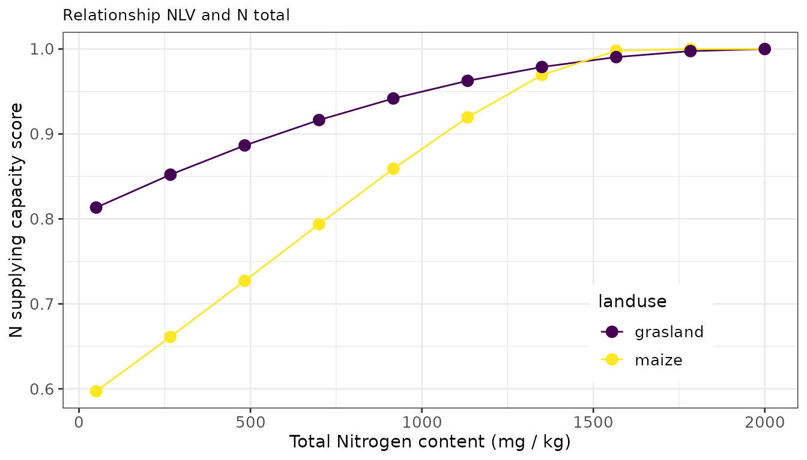
The total N supply is evaluated via a parabolic scoring function with an optimum of 100 kg N / ha in arable fields and 140 kg N / ha in grassland fields.
Phosphorus Availability Index
Phosphate (P) is present in the soil in both inorganic and organic. Inorganic P present in the soil solution is directly available for plant uptake. The amount of P in the soil solution is small compared to the total P supply of the soil. Organic P is only available to the plant after decomposition by micro-organisms. The undissolved inorganic and organic P compounds can be divided into labile and stable compounds:
- The labile P fraction is in equilibrium with the P in solution and is the main source of P re-supply to the soil solution. Labile inorganic P compounds include P bound to the surface of iron and aluminium (hydr-) oxides, and iron (Fe), aluminium (Al) and calcium phosphates. In acid and neutral soils, P availability is mainly determined by its binding to Fe and Al (hydr-) oxides. In calcareous soils, P is usually associated with calcium (Ca).
- The stable P compounds are usually poorly soluble and therefore poorly available to plants. Stable inorganic P compounds include P-containing soil minerals (e.g. apatite).
The phosphorus supply of an agricultural soil can be derived from methods measuring either a capacity or an intensity of P pools in soil or a combination of both. The latter approach is followed for grassland and maize fields, where the optimum P supply is derived from multiple field experiments across the Netherlands. For arable farming systems, the phosphorus supply is derived from one measured P pool reflecting the P status as well as controlling the crop response to P inputs. The availability is highly controlled by chemical adsorption and desorption equilibria and affected by the iron and aluminum oxides content of soils as well as the availability of oxygen. A phosphorus supply around 4.8 (unitless index, for maize and grassland fields) and 45 (mg P2O5 per liter, for arable fields) is optimal for crop production.
To assess the capacity of soils to supply P, one can make use of the
function bln_c_posphor. The function requires the following
input: the BRP crop code and P concentration measured via extraction of
ammonium lactate (A_P_AL), water (A_P_WA) or 0.01M CaCl2 (A_P_CC).
For more details, see ?bln_c_posphor.
An example of this function is illustrated below for both an arable and a grassland field with one levels of A_P_AL (being sufficient for crop growth) en varying levels of A_P_CC.
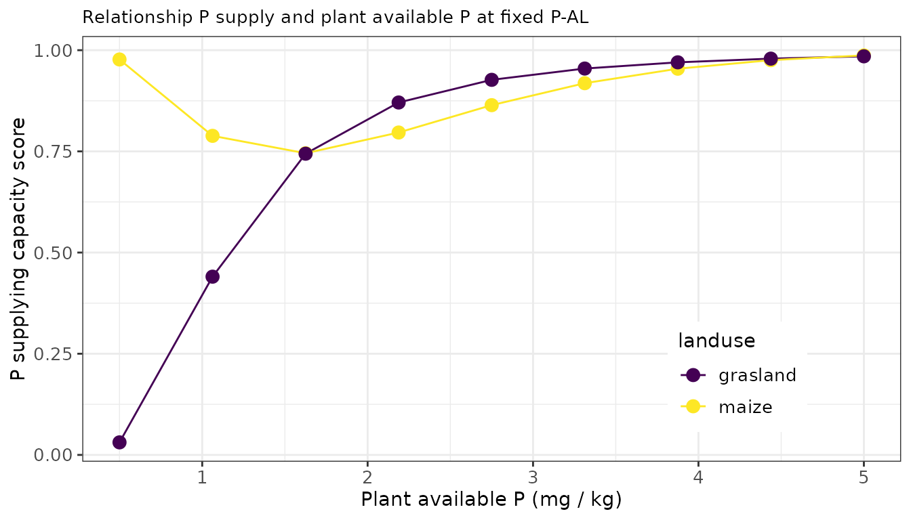
Potassium supply
Like N and P, potassium (K) an important element for crop growth. Potassium is almost exclusively present in the soil in mineral form. The amount of K in the soil can be divided into 4 fractions: * K^+- ions in the soil solution; completely and directly available to the plant, but insufficient to cover the needs of the crop * K-exchangeable; K adsorbed to the clay and humus particles (adsorption complex; CEC). The exchange between K in the soil solution and K adsorbed occurs rapidly: within minutes to 24 hours * K-fixed or bound (in clay soils); the K enclosed in the clay plates. Exchange between K-fixed and K-soil solution takes days to months * K-mineral or K rock; becomes available through weathering. The amount of K that becomes available through weathering during a growing season is too small to be of agricultural interest.
The K supply is strongly controlled by the distribution of K over the possible K pools in soil, being controlled by adsorption and desorption processes, the cation exchange capacity of the soil and competing ions in soil solution and present at the exchange complex. Building on agronomic research from the last decade, the K supply is quantified for grasslands using the plant available K fraction (measured via CaCl2-extraction, K-CaCl2) as well as the CEC. For maize it is quantified using K-CaCl2 and for arable fields its quantified from K-CaCl2 and the CEC while accounting for the clay content, the organic matter content and the pH of the soil.
To assess the capacity of soils to supply K, one can make use of the
function bln_c_potassium. The function requires the
following input: the BRP crop code, the soil type, the organic matter
content, the clay content, the pH, the cation exchange capacity (CEC),
the occupation of the CEC with potassium (%) and the directly available
concentration of K as determined with a soil extraction with 0.01M
CaCl2.
For more details, see ?bln_c_potassium.
An example of this function is illustrated below for both an arable and a grassland field, with a sandy texture, a fixed CEC and a fixed occupation of the CEC and a variable plant available K level. Note that the grassland yield quicker responds to the plant available levels of K with also a lower target value.
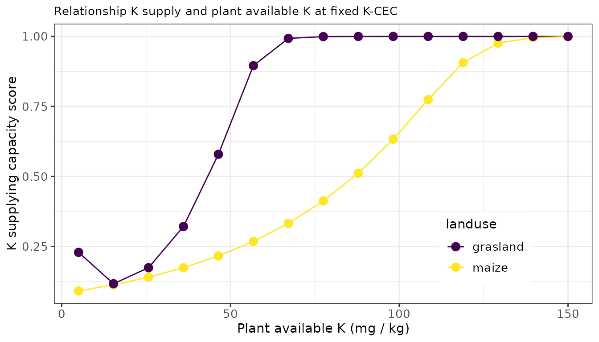
Sulfur supply
Sulfur (S) is needed - along with nitrogen - for the formation of proteins in the plant. Whether S supply from the soil is sufficient for optimal production and quality depends on the crop’s S requirements and the S supply in the soil. The S supply is determined by soil processes and external sulfur supplies to the soil.
The amount of sulfur in the soil that is available for crop uptake is determined by the mineral sulfur supply remaining in the soil after winter (Smin), mineralization of sulfur in the soil during the growing season (sulfur supply capacity), sulfur deposition, sulfur supply by irrigation during cultivation, capillary rise of sulfur-containing groundwater, and by possible losses. Sulfur supply, capillary rise, and Smin are quantitatively the most important inputs of sulfur. However, all three can vary considerably. The contribution from sulfur deposition is only minor throughout the Netherlands. A substantial amount of sulfur can also be supplied through irrigation with sulfurous spring water. This supply, however, varies greatly, depending on the amount sprayed and the sulfur content of the water.
To assess the S supplying capacity of the soil, one can make use of
the function bln_c_sulfur. The function requires the
following input: the BRP crop code, the soil type, the agricultural
region within the Netherlands (used to estimate default S deposition
rates), the organic matter content, and the total S content of the
soil.
For more details, see ?bln_c_sulfur.
An example of this function is illustrated below for both an arable and a grassland field.
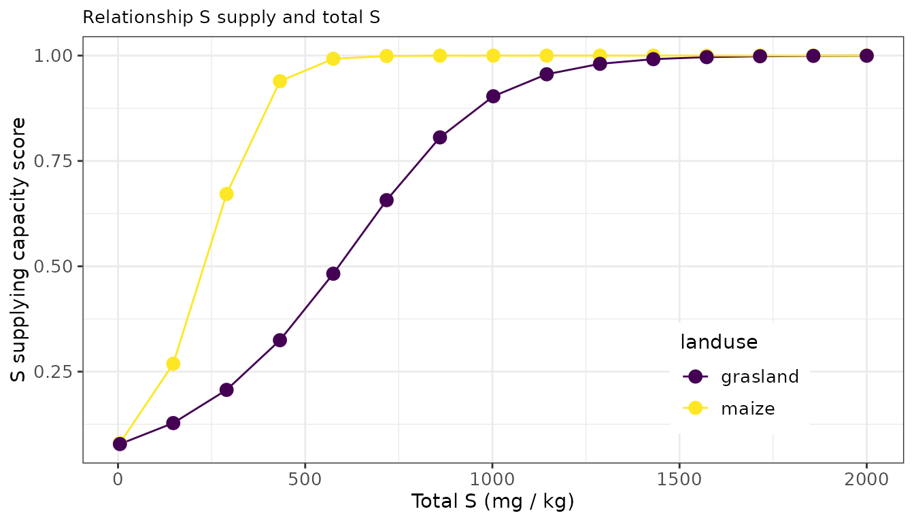
Magnesium supply
Magnesium is an important element for crop growth, livestock health, and livestock productivity. Deficiencies for magnesium often occur on sandy soils with low organic matter and low pH. The supply of Mg for arable fields as well as grassland fields on sandy soils is directly related to the plant available Mg-content (Mg-CaCl2). For grassland fields on clay and peat soils the Mg-supply is indirectly quantified given the required composition of the grass (for intake by cows) and depends on the CEC, the organic matter and clay content, pH, as well as the K-availability assessed by K-CaCl2 and K-CEC.
To assess the Mg supplying capacity of the soil, one can make use of
the function i_c_mg. The function requires the following
input: the BRP crop code, the soil type, the organic matter content, the
clay content, the pH, the cation exchange capacity (CEC), the occupation
of the CEC with potassium (%) and the directly available concentration
of both Mg and K as determined with a soil extraction with 0.01M
CaCl2.
For more details, see ?i_c_mg.
An example of this function is illustrated below for both an arable and a grassland field.
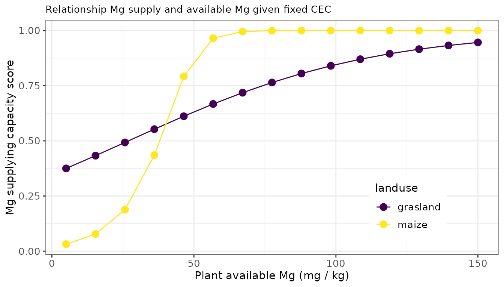
Soil Acidity
The pH is a measure of the acidity of the soil. The pH influences the soil quality and crop growth, among others through availability of nutrients and (heavy) metals and activity of soil life. In addition, the pH also influences various soil functions such as nutrient buffering and aggregate stability. The optimum soil pH for crop growth differs per crop. Potatoes prefer a lower pH and cereals, maize, sugar beet, and field vegetables a higher pH. Organic matter reduces the negative effect of pH on crop growth. On sandy soils with an organic matter content of 15%, the desired pH can be up to half a unit lower than on low organic matter content soils. On clay soils the desired pH is higher than on sandy soils. With a clay percentage above 10, the desired pH is half a unit higher than with low clay percentages.
The optimum pH is determined in historical field experiments given
crop rotation plan, soil texture, soil organic matter, and initial pH.
The assessment of the current soil pH can be done via the function
i_c_ph. The function requires the following input
variables: land use (B_LU_BRP), soil type (B_SOILTYPE_AGR), soil organic
matter (A_SOM_LOI), clay content (A_CLAY_MI) and the pH measured in
CaCl2 (A_PH_CC).
For more details, see ?i_c_ph.
An example of this function is illustrated below for both an arable and a grassland field over a predefined range in initial pH from 3 to 7.
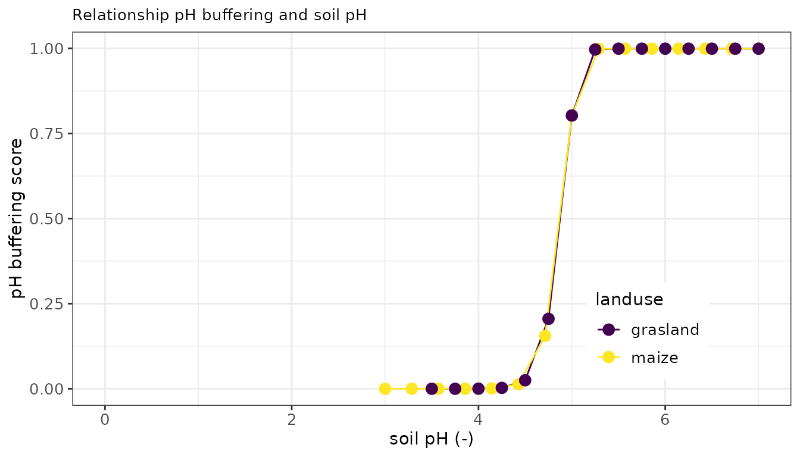
3.2 Physical soil functions
The BLN evaluates also a series of physical soil functions related to the supply of water and the rootability of the top and subsoil. The different soil physical functions are illustrated and explained below. Soil physical functions include the capacity of soils to retain and supply water, to resist wind erosion, topsoil sealing, subsoil compaction, and to deliver bearing capacity for mechanic activities.
Water Stress due to drought or wetness
The supply of water is of uttermost importance for crop development.
The water supply depends on weather conditions and the capacity of soils
to buffer and supply water during the growing season. Using long-term
field experiments for multiple crops, empirical relationships between
soil texture, ground water levels, and yield depressions due to drought
or too wet conditions have been developed (Van Bakel, 2005; Huinink,
2018). Within OBIC the crop yield response to drought stress or
wetnessstress can be estimated via the function
bln_p_droughtstress or bln_p_wetnessstress,
requiring as input a soil code (representing unique combinations of soil
type and geohydrological conditions controlling water availability),
crop type, and groundwater level.
For more details, see bln_p_droughtstress and
?bln_p_wetnessstress.
An example of this function is illustrated below for six different soils varying in soil texture and prefixed variation in the groundwater levels. This is illustrated for both drought and wetness stress. Increasing the groundwater depth results in more drought stress (depending on soil texture) and less wetness stress.
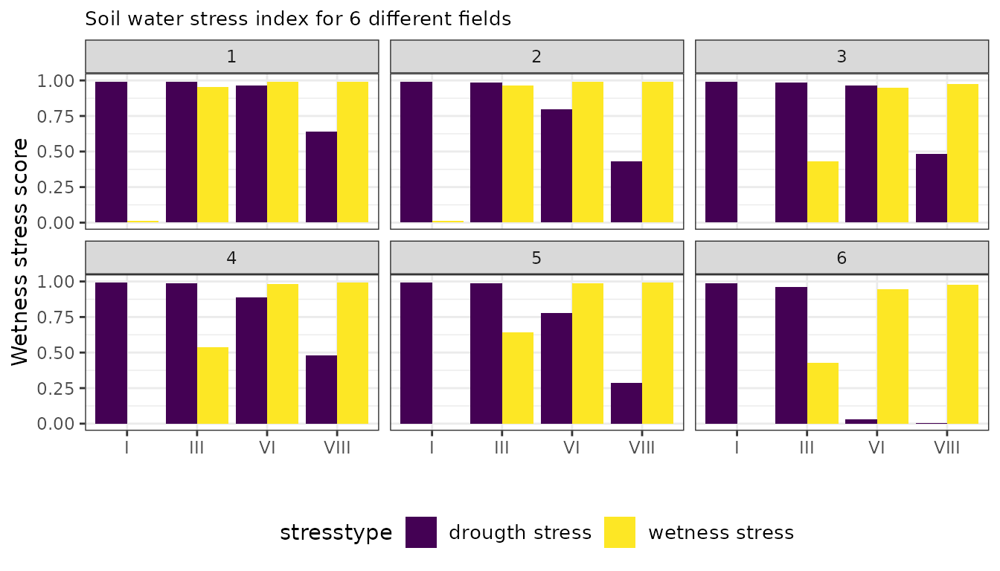
Sealing Soil Surface and Wind Erodibility
Sealing is the process whereby soil aggregates disintegrate under the influence of rain. The impact of raindrops causes a shifting of soil particles. In the process, clay and silt particles clog the pores between the sand particles or the soil aggregates. This creates a slurry layer that forms a crust after drying. This hinders the gas exchange and increases the resistance of germinating seed. Wind erosion can occur in a dry spring or autumn when the soil is (partly) bare. Wind erosion causes a decrease in organic matter content, moisture retention capacity, chemical soil fertility, and biological activity in a soil. Furthermore, wind erosion can spread diseases and weeds, expose germinating seeds, and damage young plants by sandblasting.
The vulnerability of soils to sealing and wind erosion is derived from those properties controlling the susceptibility for both risks. These include the clay content as well as the organic matter content, where the vulnerability for sealing is derived from field expert-based observations and associated yield depression in particular for some arable crops. Wind erosion is highly controlled by the mineralogical composition and texture as well as the presence of growing crops. Using laboratory experiments from wind tunnels, a exponential function has been developed to estimate the erodibility risk for soils, given the clay and silt content of a field. Grasslands are not susceptible for these two risks.
The risk for soil sealing can be assessed via the function
bln_p_sealing whereas the risk for soil erosion due to wind
is assessed via the function bln_p_windererosion. The wind
erodibility can be estimated from the inputs land use, clay and silt
content of the topsoil whereas the risk for sealing depends on the clay
content as well as the organic matter content of the soil.
For more details, see ?bln_p_sealing and
?bln_p_windererosion.
An example of these functions is illustrated below for an arable soil with variable clay content for both an cropland (with organic matter levels of 3.5%) and a grassland soil (with organic matter levels of 5%).
#> Warning: A numeric `legend.position` argument in `theme()` was deprecated in ggplot2
#> 3.5.0.
#> ℹ Please use the `legend.position.inside` argument of `theme()` instead.
#> This warning is displayed once every 8 hours.
#> Call `lifecycle::last_lifecycle_warnings()` to see where this warning was
#> generated.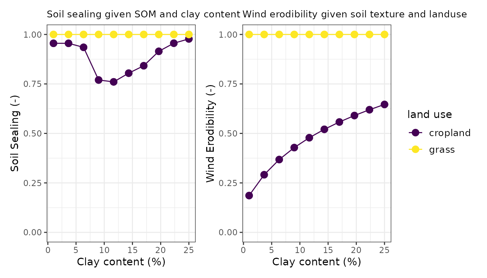
Aggregate Stability and Crumbleability
Crumbleability is an indication of the ease with which the soil can be broken up or crumbled and of the moisture range within which this is possible. The crumbleability of a soil is determined by the binding between soil aggregates. The lower the degree of crumbling, the more energy is required and the heavier tractors and equipment are needed for working the soil. This requires (additional) investments and higher fuel consumption, while the end result - even after additional tillage - is poorer.
Similarly to the vulnerability to sealing and wind erodibility, the
crumbleability of a soil (a measure for aggregate stability) as well as
the potential risk for yield depressions (crop specific) can be derived
from the clay content, the organic matter content, and the pH. Aggregate
stability is additionally evaluated given the cation occupation of the
cation exchange capacity. Clayey soils with 80% Ca, 8% Mg, and about
3.5% K are recognized as soils with more stable aggregates due to the
influence of electrostatic bindings of divalent cations. Within BLN, and
thereby following [@R-OBIC], these two
soil functions are assessed using bln_p_crumbleability and
bln_p_aggstability.
For more details, see ?bln_p_crumbleability and
?bln_p_aggstability.
To illustrate how both functions are evaluated, we firstly show the dependency of the crumbleability to varying clay content using a constant soil organic matter level of 3.5%. As shown below, the crumbleability starts at a high value of 10 and gradually declines down to a value of 6 for soils with a clay content of about 25%. The aggregate stability depends mainly on the calcium occupation of the CEC. In the figure below the distance to the optimum CEC occupation is visualized for a series of soils varying in Ca, Mg and K occupation for a soil where 100% of the CEC is occupied with a variable contribution of the three cations. The highest aggregate stability is found when the distance to the optimum is the lowest, being around a Ca occupation of about 85% of the CEC.
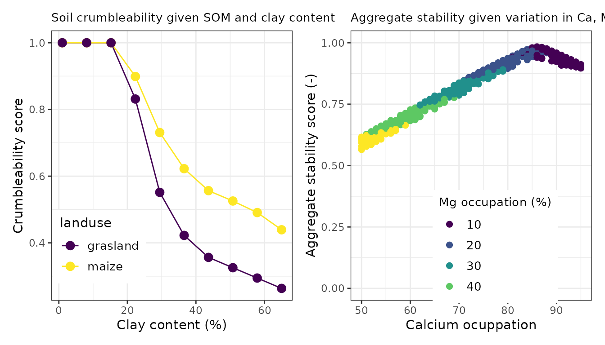
Subsoil compaction
Soil compaction is caused by the use of excessively heavy machinery or by driving over and/or tilling soil with insufficient bearing capacity. Compaction can lead to poor rooting of the soil, limiting the absorption of water and nutrients. On heavy soils, compaction mainly occurs in the soil surface, while on lighter soils there is a risk of subsoil compaction, such as plough-soil formation. Compaction decreases the workability of soils and can reduce the water retention capacity of the soil and impede water transport to deeper layers. This can lead to an increased risk of surface run-off of nutrients and soil particles. Soil compaction in the soil can be eliminated by ploughing. Subsoil compaction is almost impossible to eliminate.
The risk of subsoil compaction for each field was assessed using soil texture, land use and a soil compaction model SOCOMO. The model determines whether the usual wheel loads for that land use exceed the strength of the subsurface in wet or humid conditions. Subsequently it was determined on the basis of the soil properties and groundwater levels whether the subsurface is extra sensitive to compaction or whether natural recovery is possible due to, for example, drought shrinkage. Strength, land use, and soil properties together determine the risk of subsoil compaction. The presence of subsoil compaction is derived from a national map with the estimated risk. As such, there is no calculation used. Recent field experimental data support the accuracy of this risk assessment map.
Visual Soil Assessment Correction
Within the BLN, the estimates of aggregate stability and risk of subsoil compaction can be adapted to local site specific insights derived from the Visual Soil Assessment Methodology. Visual soil assessments (VSA) is an assessment of soil quality in the field, by digging a hole and assessing several soil quality indicators visually. Soil quality indicators are: grass cover, number of roots, number of biopores, soil color, soil structure, soil compaction, and number of gray spots. Visual soil assessments are more and more used by farmers in the Netherlands, but not specifically developed for various soil types.
Below is illustrated how the obic_field wrapper deals with the parameters derived from the VSA methodology. The score derived from the original risk assessment map for subsoil compaction is overwritten with the relevant VSA indicators when When scores are present for the presence of earthworms (A_EW_BCS), the occurrence of subsurface compaction (A_SC_BCS), limited root development (A_RD_BCS), ponding in the spring (wet conditions after rainfall, A_P_BCS) and clear presence of visible tracks / rutting or trampling on the land (A_RT_BCS). Similarly, the soil aggregate stability is adapted when VSA indicators are available for earthworm density (A_EW_BCS), soil structure (A_SS_BCS), and presence of cracks in the topsoil (A_C_BCS).
# overwrite soil physical functions for compaction when BCS is available
dt[,D_P_CO := (3 * A_EW_BCS + 3 * A_SC_BCS + 3 * A_RD_BCS - 2 * A_P_BCS - A_RT_BCS)/18]
dt[,D_P_CO := pmax(0, D_P_CO)]
dt[,I_P_CO := fifelse(is.na(D_P_CO),I_P_CO,D_P_CO)]
# overwrite soil physical functions for aggregate stability when BCS is available
dt[,D_P_CEC := (3 * A_EW_BCS + 3 * A_SS_BCS - A_C_BCS)/12]
dt[,D_P_CEC := pmax(0, D_P_CEC)]
dt[,I_P_CEC := fifelse(is.na(D_P_CEC),I_P_CEC,D_P_CEC)]In the left figure below one can see how the soil compaction risk is adapted when information is known from the Visual Soil Assessment. The soil was originally evaluated as a soil with low compaction, resulting in a high soil compaction score (the distance to target is small). When all observations of the VSA have a high quality score (the value 2) then the score remains the same. As soon as the observations of the VSA show bottlenecks in the soil structure or rootability (the field score becomes zero) then the soil compaction score is declined to almost zero (the distance to target is huge). Similarly, the aggregate stability score can be adapted, as shown here for a soil with a moderate aggregate stability index. When field observations support a conclusion for the soil that the aggregate stability is good (score = 2) then the aggregate stability index is corrected to the maximum index a soil can retrieve (the value 1). In contrast, when field observations support the conclusion of serious bottlenecks for aggregate stability, then the index declines to almost zero.
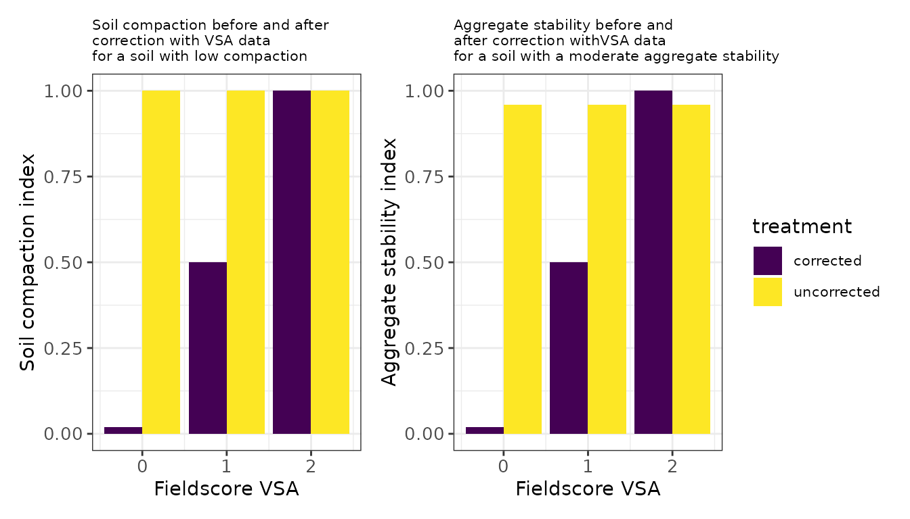
Water retention in topsoil
The moisture characteristic of a soil depends on its physical properties, texture, and structure. The texture of a soil is determined by its clay, loam, and sand content. In addition, almost all soils contain organic matter. The fine soil particles, together with the organic matter, contribute to aggregate formation (and thus to the soil structure). The size, shape, and arrangement of the soil particles and aggregates, and pores, determine the soil’s capacity to retain water. Large pores are able to conduct more water faster than small pores, moreover, removing water from large pores will require less energy than removing water from small pores. When a soil is at field capacity, the moisture state is such that all the water in the macro pores has been replaced by air under the influence of the gravitational potential. The water that is still present in the soil is retained in micro pores. The prevailing potential at field capacity can vary from soil to soil but usually varies between -0.1 bar (sandy soil) to -0.3 bar (loamy soil). When water is retained to such an extent that it is no longer available for crop uptake, this is known as the wilting point. The water is mainly present as a film around individual soil particles. The potential under these conditions is around -18 bar. The amount of moisture present between field capacity and wilting point is defined as the amount of plant-available water.
The review study of various soil health instruments (Bunemann et al., 2016) identifies a variety of indicators that can be used to gain more insight into the water retaining capacity of a soil. Frequently used indicators are the amount of plant-available water (14 x), the water holding capacity (11 x), the moisture content at field capacity (11 x), and the saturated permeability (10 x). These indicators can be measured or estimated indirectly via so-called pedotransfer functions.
The BLN makes use of OBIC functions to derive the following
water-related indicators in function
OBIC::calc_waterretention. A few examples are illustrated
below:
- the moisture content at wilting point and field capacity
- The amount of plant available water (mm)
- the flow limit or porosity, also called water holding capacity, and
- the saturated permeability.
The basic indicator used in the BLN is not the amount of plant available water as implemented in OBIC but the water holding capacity. The capacity of the soil to buffer water during the growing season is estimated from pedotransferfunctions (pdf) for plant available water in the topsoil. The default pdf is derived from a European database, and enables one to estimate the van Genuchten parameters for the pF-curve. Other options are also possible.
For more details, see ?OBIC::calc_waterretention.
Functions are copied into bln_helpers.R. For the
implementation of the WHC assessment, see ?bln_p_whc.
# estimate the plant available water in topsoil
dt[, D_WRI := calc_waterretention(A_CLAY_MI,A_SAND_MI,A_SILT_MI,A_SOM_LOI,type = 'plant available water')]
# estimate the water holding capacity in topsoil
dt[, D_WRI := calc_waterretention(A_CLAY_MI,A_SAND_MI,A_SILT_MI,A_SOM_LOI,type = 'water holding capacity')]
# estimate the moisture content of the wilting point in topsoil
dt[, D_WRI := calc_waterretention(A_CLAY_MI,A_SAND_MI,A_SILT_MI,A_SOM_LOI,type = 'wilting point')]
# estimate the moisture content of the field capacity in topsoil
dt[, D_WRI := calc_waterretention(A_CLAY_MI,A_SAND_MI,A_SILT_MI,A_SOM_LOI,type = 'field capacity')]
# estimate the saturated permeability in topsoil
dt[, D_WRI := calc_waterretention(A_CLAY_MI,A_SAND_MI,A_SILT_MI,A_SOM_LOI,type = 'Ksat')]Below we illustrate how the amount of water holding capacity (in mm) changes with clay content, sand content, silt content and soil organic matter content. All other soil properties are assumed to be constant.
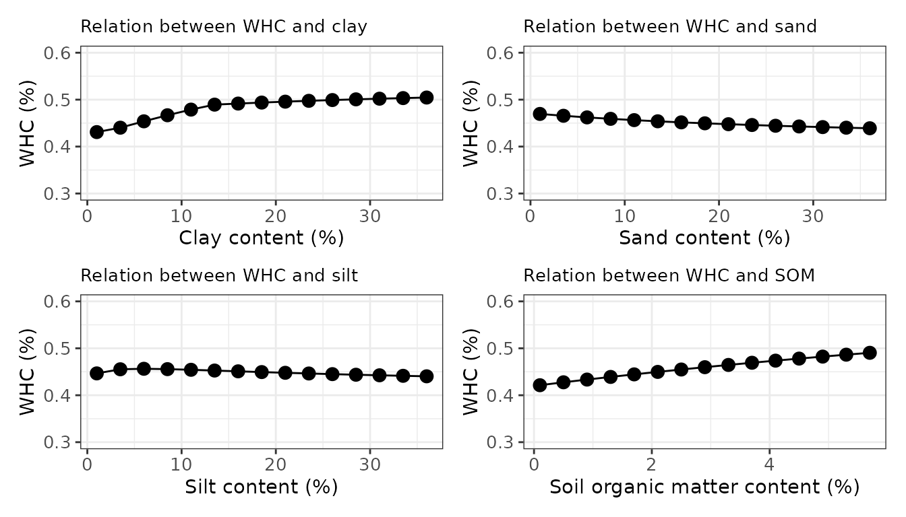
Workability
Agricultural fields are not always workable in particular when the conditions for farm activities are limited by too wet or too dry conditions. The relative season length, and in extension, the soil quality assessment for workability, are a function of the soil and hydrological properties of the field as well as the growing season and soil working depth requirements of the crop. By choosing a crop with a shorter growing season and or more shallow soil working depth, the score can be improved.
For more information of the function, see
?bln_p_workability.
Bulk density
Plant roots are limited in their development when the bulk density
exceeds a certain threshold. To assess the soil quality in view of this
penetration resistance, the bulk density is assessed using the function
bln_p_density. If not measured, it is estimated using a
pedotransfer function commonly applied in the Netherlands. It requires
as input the soil organic matter content (A_SOM_LOI), the clay content
(A_CLAY_MI). For more information, see ?bln_p_density.
3.3 Biological soil functions
The BLN assesses also series of soil biological functions related to the composition of the microbiome, suppression of soil borne pests and plagues, and plant parasitic nematodes.
Potentially mineralizable nitrogen
The activity of soil fungi and bacteria has been measured via incubation trials for decades. In such incubation trials, the decomposition of soil organic nitrogen is measured over a period of time. The amount of nitrogen that mineralizes in such trials is called the ‘potential mineralizable nitrogen’(PMN). This indicates the ability of the soil to provide a crop with readily available nitrogen. In the Netherlands, this parameter is also used as an indicator for activity of soil microbes. This is possible because during the incubation, a soil sample is submerged in water, creating an anaerobic environment, killing aerobic bacteria and fungi, which, together with some labile organic matter, are decomposed by anaerobic soil microbes.
For more information see ?bln_b_pmn.
# calculate the index for the potential mineralizable nitrogen pool
dt[, D_PMN := bln_b_pmn(B_LU_BRP, B_SOILTYPE_AGR, A_N_PMN)]The PMN measured by routine laboratories in the Netherlands may be overestimated. Therefore, a land-use dependent correction factor is used. The PMN index is capped at 500. Below an example of this function is given.
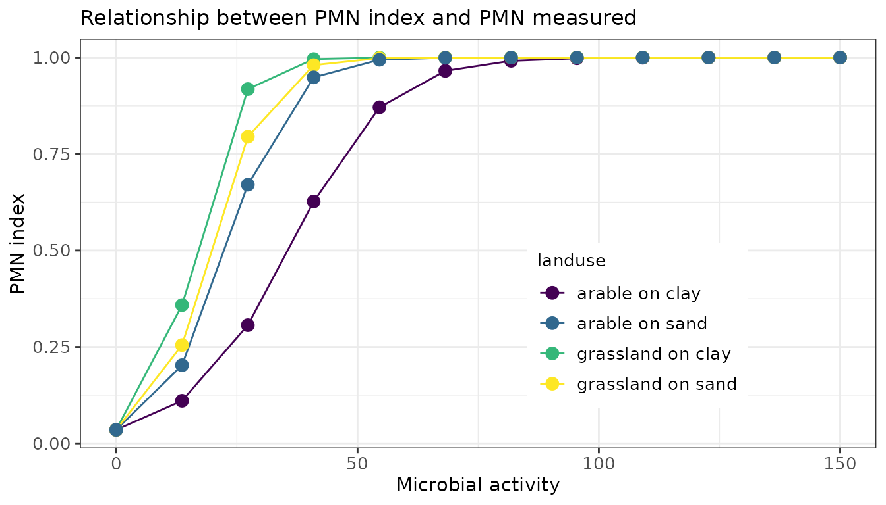
Disease resistance
The activity of the soil life is an indication of the general disease resistance of the soil. When a soil food web is in balance, the soil’s resistance to disease and pests is also optimal. The soil’s resistance to diseases and pests is often cited as a characteristic of a soil with good biological soil quality. The idea behind this is that a soil with a well-developed soil food web will be in balance, which means that strong multiplication of parasitic soil organisms is inhibited by other soil life. Mechanisms include competition for food or infection sites on the root, eating the pathogens before they have had a chance to multiply (myco-parasitism), or secreting (specific) substances that pathogens cannot tolerate (antibiosis or soil fungistasis).
Organic matter serves as a food source for soil life and influences the living environment of soil life through its effects on soil structure and water holding capacity. The quantity and quality of organic matter can therefore be used as an indicator for the quantity and activity of soil life, and thus as an indicator for general soil resilience.
At low organic matter concentrations, the contribution of organic matter to soil life is negligible. A soil organic matter concentration between 4% and 10% likely creates the best environment for good disease resistance.
For more information see ?bln_b_diseaseresistance.
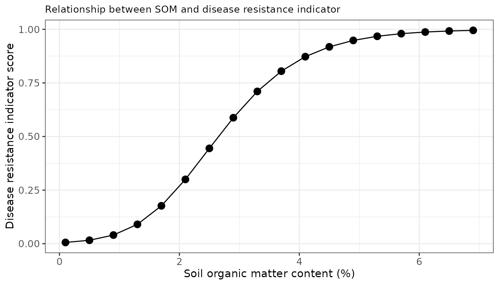
Plant Parasitic Nematodes
Nematodes are small animals occurring in all ecotypes on Earth, so also in soil. There is a large variety of nematodes in soils, they vary amongst other things, in size, feeding habits, reproduction speed, and life cycle. Plant parasitic nematodes (PPN) can reproduce in a range of host plants. Some nematodes have a specific host preference while other can reproduce in a large variety of plants. PPN can severely depress crop yields in vulnerable crops. Therefore, farmers can have their fields sampled to analyse which and how many nematodes occur.
A nematode parameter that is not entered is assumed to be 0. The severity of an infection depends on the number of individuals and differs per parameter. For example: five Pratylenchus fallax (A_RLN_PR_FAL) will barely reduce the indicator score while five Ditylenchus destructor (A_SN_DI_DES) will severly reduce the score. It is assumed that the most severe infection is most limiting for crop production, therefore, the lowest score for a nematode parameter will determine the indicator score.
At the moment there is not yet a function for this present in the BLN
due to the fact that actual observations are not present in open
databases or the National Agricultural Soil Archive.
Earthworm density
Earthworms are some of the largest fauna found in agricultural soils and through their tunneling affect nutrient cycling and soil structure. Analysis and interpretation of earthworm diversity is not regularly done on Dutch agricultural soils. Earth worm density, the number of individual worms in a volume of soil, is one of the things studied in the Visual Soil Assessment (see Visual Soil Assessment for more information).
4. Crop and soil dependent applicability of functions
Not all indicators are relevant for all combinations of soil type and
crop. For example, i_p_du (wind erodibility) is not
relevant on permanent grassland, as wind erosion is not a problem on
these parcels. This is accounted for in the aggregation of the BLN
scores. Crops are differentiated into the categories arable, grassland,
maize, and nature according to the crop_category from the table
bln_crops, being a copy of OBIC::crops.obic.
In soil type a differentiation is made between peat and non peat soils.
If an indicator is not relevant for a given parcel, its score will not
be used in further aggregation.
5. Reading more?
More vignettes will be made available regarding the derivation of all soil health indicators, the aggregation methods applied, the derivation of optimum land use given the current soil quality assessments, and the best management practices to be applied to improve the soil quality. Are you interested to contribute, please contact the author(s) of this R package. Enjoy!